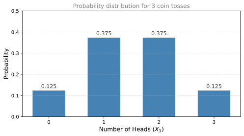
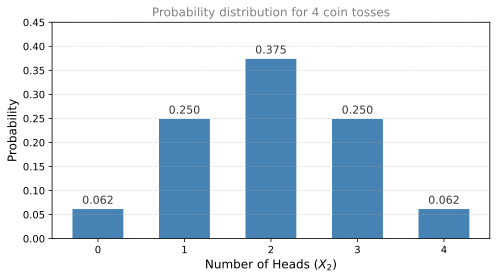
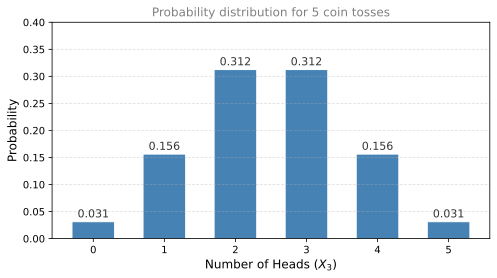
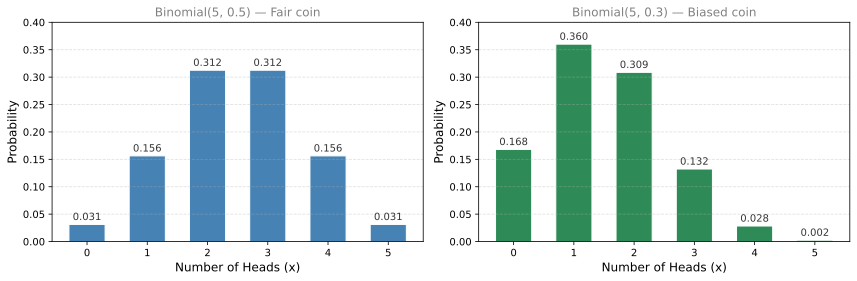
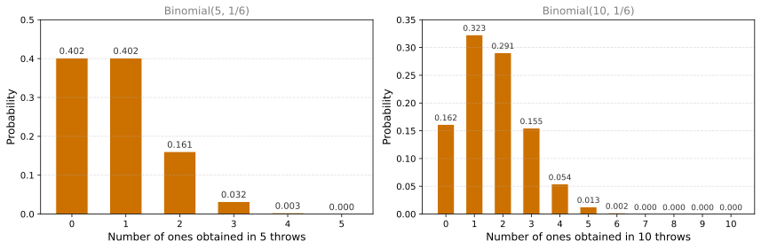

Probability Distributions (Discrete)
probability
What is a Probability Distribution?
In the previous pages, you learned how to calculate individual probabilities and how to do math with them (complements, sums, conditional probability). Now imagine that you take all the possible scenarios that can happen, put them on a horizontal axis, and for each one look at the probability that it happens. This forms a probability distribution.
A probability distribution shows the complete picture: every possible value a random variable can take and the probability of each.
Three Coin Tosses
Suppose you toss three coins and define a random variable \(X_1\) as the number of heads. How does each outcome of the experiment map to the random variable?
The sample space for three coins has \(2^3 = 8\) equally likely outcomes:
| Outcome | Number of Heads (\(X_1\)) |
|---|---|
| TTT | 0 |
| HTT | 1 |
| THT | 1 |
| TTH | 1 |
| HHT | 2 |
| HTH | 2 |
| THH | 2 |
| HHH | 3 |
Notice the pattern:
- There is 1 way to get 0 heads (all tails).
- There are 3 ways to get 1 head (the single head can appear on the first, second, or third coin).
- There are 3 ways to get 2 heads (the single tail can appear on the first, second, or third coin).
- There is 1 way to get 3 heads (all heads).
Dividing by the total number of outcomes (8), we get the probability for each value:
\[ P(X_1 = 0) = \frac{1}{8}, \quad P(X_1 = 1) = \frac{3}{8}, \quad P(X_1 = 2) = \frac{3}{8}, \quad P(X_1 = 3) = \frac{1}{8} \]
Now you can clearly see why it is much more likely to obtain 1 or 2 heads than 0 or 3. It is because of how many different outcomes contribute to each value.
Four Coin Tosses
Now let \(X_2\) be the number of heads in four coin tosses. There are \(2^4 = 16\) total outcomes. The same counting logic applies:
- 1 way to get 0 heads (TTTT) or 4 heads (HHHH)
- 4 ways to get 1 head or 3 heads (the minority coin can be in any of 4 positions)
- 6 ways to get 2 heads (choose which 2 of the 4 positions are heads)
The probabilities are:
\[ P(X_2 = 0) = \frac{1}{16}, \quad P(X_2 = 1) = \frac{4}{16}, \quad P(X_2 = 2) = \frac{6}{16}, \quad P(X_2 = 3) = \frac{4}{16}, \quad P(X_2 = 4) = \frac{1}{16} \]

Five Coin Tosses
Let \(X_3\) be the number of heads in five coin tosses. There are \(2^5 = 32\) total outcomes.
- 1 way to get 0 or 5 heads
- 5 ways to get 1 or 4 heads (the minority coin can be in any of 5 positions)
- 10 ways to get 2 or 3 heads
It is easy to figure out that for all heads there is only 1 possibility, or for only 1 head there are as many possibilities as flips (because the single head can be on any of the 5 flips). But how would you calculate that there are 10 options for 2 heads? That involves the binomial coefficient, which we will cover in the next section.
\[ P(X_3 = 0) = \frac{1}{32}, \quad P(X_3 = 1) = \frac{5}{32}, \quad P(X_3 = 2) = \frac{10}{32}, \quad P(X_3 = 3) = \frac{10}{32}, \quad P(X_3 = 4) = \frac{5}{32}, \quad P(X_3 = 5) = \frac{1}{32} \]

Probability Mass Function (PMF)
Each bar in the distributions above represents the probability that the random variable takes a specific value. For \(X_3\), you have \(P(X_3 = x)\) for each \(x\) from 0 to 5. This function is called the probability mass function of \(X_3\), written with a lowercase \(p\):
\[ p(x) = P(X = x) \]
All discrete random variables can be modeled by their probability mass function (PMF). It contains all the necessary information to understand how probability distributes among all possible values of the variable.
Requirements for a Valid PMF
A function \(p(x)\) is a valid PMF if and only if it satisfies two conditions:
Non-negativity: \(p(x) \geq 0\) for all \(x\). Since \(p(x)\) is defined as a probability, it can never be negative.
Sums to 1: \(\displaystyle\sum_{\text{all } x} p(x) = 1\). When you add up the probabilities of all possible values, the total must equal 1. This makes sense because you are accounting for every possible outcome of the experiment.
Noticing the Pattern
\(X_1\), \(X_2\), and \(X_3\) are very similar. They all count the number of heads in a fixed number of coin tosses (3, 4, and 5 respectively). The way probability distributes over all possible values follows a similar pattern in each case: symmetric, highest in the middle, lowest at the extremes.
Could there be a single model to represent all these random variables? It turns out there is, and it is called the binomial distribution. That is the topic of the next section.
Review Questions
1. For 3 coin tosses, why is \(P(X_1 = 1) = \frac{3}{8}\) and not \(\frac{1}{8}\)?
TipAnswer
Because there are 3 different outcomes that result in exactly 1 head: HTT, THT, and TTH. Each of the 8 equally likely outcomes has probability \(\frac{1}{8}\), and since 3 of them give \(X_1 = 1\), we get \(P(X_1 = 1) = \frac{3}{8}\).
2. A discrete random variable \(Y\) can take values 1, 2, 3, and 4. You know that \(P(Y=1) = 0.1\), \(P(Y=2) = 0.3\), and \(P(Y=3) = 0.4\). What is \(P(Y=4)\)?
TipAnswer
Since the PMF must sum to 1: \(P(Y=4) = 1 - 0.1 - 0.3 - 0.4 = 0.2\).
3. What are the two requirements for a valid probability mass function?
TipAnswer
- Every value must be non-negative: \(p(x) \geq 0\) for all \(x\).
- The sum over all possible values must equal 1: \(\sum p(x) = 1\).
4. If you flip 5 coins, how many total outcomes are there? How many of those outcomes have exactly 0 heads?
TipAnswer
There are \(2^5 = 32\) total outcomes. Only 1 outcome has exactly 0 heads (TTTTT), so \(P(X_3 = 0) = \frac{1}{32}\).
5. Looking at the distributions for 3, 4, and 5 coin tosses, what pattern do you notice about the shape?
TipAnswer
All distributions are symmetric (the left side mirrors the right side), with the highest probability in the middle (equal or near-equal heads and tails) and the lowest probabilities at the extremes (all heads or all tails). As the number of coin tosses increases, the distribution has more bars and starts to look more like a bell curve.
Binomial Distribution
Let us start with one of the simplest distributions out there: the binomial distribution. Imagine tossing a coin 10 times. How many heads can you obtain? It could be 0, 1, 2, 3, all the way up to 10. Each value comes with its own corresponding probability, and plotting all of them gives you the binomial distribution.
Counting Arrangements
What is the probability of obtaining exactly 2 heads when you flip 5 coins?
For each flip, there is a \(\frac{1}{2}\) chance of getting heads or tails. One specific sequence with 2 heads (say HHTTT) has probability:
\[ \frac{1}{2} \times \frac{1}{2} \times \frac{1}{2} \times \frac{1}{2} \times \frac{1}{2} = \frac{1}{32} \]
But there are more ways to obtain 2 heads out of 5. Any arrangement of 2 heads and 3 tails works. How many such arrangements exist?
Binomial Coefficient
To count the number of ways to order 2 heads and 3 tails in a sequence of 5, we use the binomial coefficient:
\[ \binom{5}{2} = \frac{\overbrace{5!}^{\text{Ways to order 5 coins}}}{\underbrace{2!}_{\text{Swaps among H}} \cdot \underbrace{3!}_{\text{Swaps among T}}} = \frac{120}{2 \cdot 6} = 10 \]
Why does this formula work?
- \(5!\) is the number of ways to arrange all 5 coins in a line.
- But the 2 heads are identical to each other, so we divide by \(2!\) to remove the cases where we simply swapped the two heads.
- Similarly, the 3 tails are identical, so we divide by \(3!\) to remove swaps among the three tails.
The result is 10 distinct arrangements of 2 heads and 3 tails.
In general, the binomial coefficient \(\binom{n}{k}\) (read as “\(n\) choose \(k\)”) counts the number of ways to choose \(k\) heads in \(n\) coin tosses:
\[ \binom{n}{k} = \frac{n!}{k!(n-k)!} \]
NoteSymmetry Property
\(\binom{n}{k} = \binom{n}{n-k}\). Obtaining \(k\) heads is the same as obtaining \(n-k\) tails. This is why the PMF of a fair coin has a symmetrical shape.
General PMF for the Binomial Distribution
Let us build up the formula step by step, starting from our 5-coin example.
Step 1: What if the coin is not fair?
So far we assumed \(P(\text{heads}) = \frac{1}{2}\). But what if the coin is biased? Let us call the probability of heads \(p\). For a fair coin \(p = 0.5\), but it could be anything between 0 and 1.
Step 2: Probability of one specific sequence
Suppose we flip 5 coins and want exactly 2 heads. Consider one specific sequence, say HHTTT. What is its probability?
- First flip is H: probability \(p\)
- Second flip is H: probability \(p\)
- Third flip is T: probability \((1-p)\)
- Fourth flip is T: probability \((1-p)\)
- Fifth flip is T: probability \((1-p)\)
Since the flips are independent, we multiply:
\[ p \cdot p \cdot (1-p) \cdot (1-p) \cdot (1-p) = p^2 \cdot (1-p)^3 \]
Notice the pattern: we have \(p\) raised to the number of heads (2), and \((1-p)\) raised to the number of tails (3).
Step 3: How many such sequences exist?
The sequence HHTTT is just one way to arrange 2 heads and 3 tails. We already calculated that there are \(\binom{5}{2} = 10\) ways. Each of these 10 sequences has the same probability \(p^2(1-p)^3\).
Step 4: Combine them
The total probability of getting exactly 2 heads (in any order) is:
\[ P(X = 2) = \underbrace{\binom{5}{2}}_{\text{number of arrangements}} \times \underbrace{p^2}_{\text{prob of 2 heads}} \times \underbrace{(1-p)^3}_{\text{prob of 3 tails}} \]
Step 5: Replace 2 with any number \(x\)
There is nothing special about 2. If we want exactly \(x\) heads in 5 flips:
\[ P(X = x) = \binom{5}{x} \, p^x \, (1-p)^{5-x}, \quad x = 0, 1, 2, 3, 4, 5 \]
Step 6: Replace 5 with any number \(n\)
And there is nothing special about 5 flips either. For \(n\) flips:
\[ P(X = x) = \binom{n}{x} \, p^x \, (1-p)^{n-x}, \quad x = 0, 1, 2, \ldots, n \]
This is the PMF of the binomial distribution. We write:
\[ X \sim \text{Binomial}(\underbrace{n}_{\text{number of flips}},\; \underbrace{p}_{P(\text{heads})}) \]
The tilde symbol (\(\sim\)) is read as “follows” or “is distributed as.” It means the random variable \(X\) follows the distribution to the right.
Visualizing the Binomial PMF
When \(p = 0.5\) and \(n = 5\), the PMF is symmetric because getting heads and tails are equally likely:

Notice that when \(p = 0.5\) (left), the PMF is symmetric. When \(p = 0.3\) (right), you have greater chances of seeing a small number of heads, and the distribution shifts to the left.
Dice Example
The binomial distribution is not limited to coins. Consider throwing a die 5 times and counting the number of ones. You can think of the die as a biased coin: “heads” means rolling a 1 (probability \(\frac{1}{6}\)) and “tails” means rolling anything else (probability \(\frac{5}{6}\)).
What is the probability of getting exactly 3 ones in 5 throws?
\[ P(X = 3) = \binom{5}{3} \left(\frac{1}{6}\right)^3 \left(\frac{5}{6}\right)^2 = 10 \times \frac{1}{216} \times \frac{25}{36} = \frac{250}{7776} \approx 0.032 \]

If you throw the die 10 times instead, the distribution is \(\text{Binomial}(10, \frac{1}{6})\). Same die, same probability of rolling a 1, just more throws. Now \(X\) can range from 0 to 10. Since \(p = \frac{1}{6}\) is small, you would expect roughly \(10 \times \frac{1}{6} \approx 1.7\) ones on average, so the distribution clusters around 1-2 ones and getting 5 or more is extremely unlikely. The parameters are \(n = 10\) (number of throws) and \(p = \frac{1}{6}\) (probability of rolling a 1).
Review Questions
6. What does the binomial coefficient \(\binom{5}{2}\) count, and what is its value?
TipAnswer
It counts the number of ways to arrange 2 heads and 3 tails in a sequence of 5 coin flips. Its value is \(\frac{5!}{2! \cdot 3!} = \frac{120}{2 \times 6} = 10\).
7. Write the PMF for \(X \sim \text{Binomial}(n, p)\). What do \(n\) and \(p\) represent?
TipAnswer
\(P(X = x) = \binom{n}{x} p^x (1-p)^{n-x}\) for \(x = 0, 1, \ldots, n\). Here \(n\) is the number of independent trials and \(p\) is the probability of success on each trial.
8. Why is the PMF of a fair coin (\(p = 0.5\)) symmetric, but the PMF with \(p = 0.3\) is not?
TipAnswer
Because \(\binom{n}{k} = \binom{n}{n-k}\) (symmetry of the binomial coefficient), and when \(p = 0.5\), we also have \(p^k(1-p)^{n-k} = p^{n-k}(1-p)^k\), so \(P(X=k) = P(X=n-k)\). When \(p \neq 0.5\), the \(p^k(1-p)^{n-k}\) term breaks that symmetry, making smaller values of \(k\) more likely when \(p < 0.5\).
9. You throw a die 10 times and count the number of ones. What are the parameters \(n\) and \(p\) for the corresponding binomial distribution?
TipAnswer
\(n = 10\) (the number of throws) and \(p = \frac{1}{6}\) (the probability of rolling a 1 on each throw). So \(X \sim \text{Binomial}(10, \frac{1}{6})\).
Bernoulli Distribution
Let us go back to the simplest case: a single coin flip. You flip once, and define \(X\) as the number of heads. You either get heads (\(X = 1\), “success”) or tails (\(X = 0\), “failure”).
\[ P(X = 1) = p \qquad P(X = 0) = 1 - p \]
This is the Bernoulli distribution. It models any experiment with exactly two outcomes: success or failure. It has one parameter: \(p\), the probability of success.
Examples of Bernoulli Experiments
The Bernoulli distribution appears everywhere. Any time you have a yes/no outcome, you have a Bernoulli:
| Experiment | Success (\(X = 1\)) | Failure (\(X = 0\)) | \(p\) |
|---|---|---|---|
| Flip a fair coin | Heads | Tails | 0.5 |
| Roll a die, check for 1 | Got a 1 | Got anything else | \(\frac{1}{6}\) |
| Check if a patient is sick | Sick | Healthy | depends on disease |
Notice that “success” does not mean something good happened. It simply means the outcome you are counting occurred. A sick patient is a “success” if you are counting sick patients.
Relationship to Binomial
The Bernoulli distribution is just a Binomial with \(n = 1\):
\[ \text{Bernoulli}(p) = \text{Binomial}(1, p) \]
Conversely, the binomial distribution counts the number of successes in \(n\) independent Bernoulli trials. Each individual coin flip is a Bernoulli experiment. When you repeat it \(n\) times and count successes, you get a Binomial.
Review Questions
10. What is the difference between a Bernoulli distribution and a Binomial distribution?
TipAnswer
A Bernoulli distribution models a single trial with two outcomes (success/failure) and has one parameter \(p\). A Binomial distribution models \(n\) independent trials and counts the total number of successes. Bernoulli is the special case of Binomial with \(n = 1\).
11. You check whether it rains tomorrow (yes or no). The probability of rain is 0.4. Write this as a Bernoulli distribution.
TipAnswer
Let \(X = 1\) if it rains (success) and \(X = 0\) if it does not rain. Then \(X \sim \text{Bernoulli}(0.4)\), meaning \(P(X=1) = 0.4\) and \(P(X=0) = 0.6\).
12. Throwing a 4-sided fair die and observing if it lands on 2 or not can be modeled as a Bernoulli distribution with \(p\) equals to:
- 1/4
- 1/6
- 1/2
- 3/4
TipAnswer
a. 1/4. A 4-sided fair die has 4 equally likely outcomes. “Landing on 2” is a single outcome, so the probability of success is \(\frac{1}{4}\).
(Optional) Deeper Look at the Binomial Coefficient
In the previous section, we stated that \(\binom{n}{k} = \frac{n!}{k!(n-k)!}\) counts the number of ways to arrange \(k\) heads among \(n\) positions. Here we derive why that formula works from scratch.
Picking \(k\) Items from \(n\) (Ordered)
Suppose you have \(n\) distinct items and want to pick \(k\) of them, one at a time, where order matters.
- For the first pick, you have \(n\) options.
- For the second pick, you have \(n-1\) options (one is already chosen).
- For the third pick, \(n-2\) options.
- Continue until the \(k\)-th pick, where you have \(n-k+1\) options.
The total number of ordered selections is:
\[ n \times (n-1) \times (n-2) \times \cdots \times (n-k+1) \]
Removing the Order
But we do not care about order. The set \(\{H, T, H\}\) in positions 1, 3 is the same as positions 3, 1. How many times does each unordered set get counted?
Consider a specific set of \(k\) items. How many ways can you arrange those \(k\) items in a line?
- First position: \(k\) choices
- Second position: \(k-1\) choices
- Third position: \(k-2\) choices
- All the way down to 1
That gives \(k \times (k-1) \times \cdots \times 1 = k!\) orderings.
NoteWhat is \(k!\) (k factorial)?
\(k!\) is the product of all positive integers from \(k\) down to 1. For example: \(4! = 4 \times 3 \times 2 \times 1 = 24\). It counts the number of ways to arrange \(k\) distinct objects in a line. By convention, \(0! = 1\).
Putting It Together
Since each unordered set of \(k\) items was counted \(k!\) times in our ordered count, we divide:
\[ \binom{n}{k} = \frac{n \times (n-1) \times \cdots \times (n-k+1)}{k!} \]
We can rewrite the numerator more neatly. Notice that \(n \times (n-1) \times \cdots \times (n-k+1) = \frac{n!}{(n-k)!}\) (because \(n!\) is the full product down to 1, and dividing by \((n-k)!\) removes the bottom portion). So:
\[ \binom{n}{k} = \frac{n!}{k! \cdot (n-k)!} \]
This is the same formula we used earlier, but now you know why it works: count all ordered selections, then divide out the duplicate orderings.
Special Cases
- \(\binom{n}{0} = \frac{n!}{0! \cdot n!} = 1\). There is exactly one way to choose nothing: do not pick anything.
- \(\binom{n}{1} = n\). There are \(n\) ways to pick one item.
- \(\binom{n}{n} = 1\). There is one way to pick everything: take all of them.
Why This Matters for Biased Coins
When the coin is fair (\(p = 0.5\)), all sequences of \(n\) flips have the same probability \(\left(\frac{1}{2}\right)^n\), so we only need to count arrangements and divide by total outcomes.
When the coin is biased (say \(p = 0.3\)), different sequences have different probabilities. A sequence with \(k\) heads has probability \(0.3^k \times 0.7^{n-k}\). But we still need \(\binom{n}{k}\) to count how many sequences produce exactly \(k\) heads. That is why the full binomial formula is:
\[ P(X = k) = \binom{n}{k} \, p^k \, (1-p)^{n-k} \]
The binomial coefficient handles “how many arrangements,” and \(p^k(1-p)^{n-k}\) handles “what probability does each arrangement have.”
Review Questions
13. Why do we divide by \(k!\) when computing \(\binom{n}{k}\)?
TipAnswer
Because when we count ordered selections (\(n \times (n-1) \times \cdots \times (n-k+1)\)), each unordered set of \(k\) items gets counted \(k!\) times (once for each possible ordering of those \(k\) items). Dividing by \(k!\) removes the duplicates so we only count each set once.
14. What is \(\binom{7}{0}\) and why?
TipAnswer
\(\binom{7}{0} = 1\). There is exactly one way to choose 0 items from 7: do not pick anything. Algebraically: \(\frac{7!}{0! \cdot 7!} = \frac{1}{1} = 1\).
15. A biased coin has \(P(\text{heads}) = 0.3\). You flip it 5 times. What is the probability of the specific sequence HHTTT? What about THTHT?
TipAnswer
Both sequences have exactly 2 heads and 3 tails, so both have the same probability: \(0.3^2 \times 0.7^3 = 0.09 \times 0.343 = 0.03087\). The order of heads and tails within the sequence does not change the probability, only the counts of each matter.
Previous: Random Variables | Next: Bernoulli Distribution